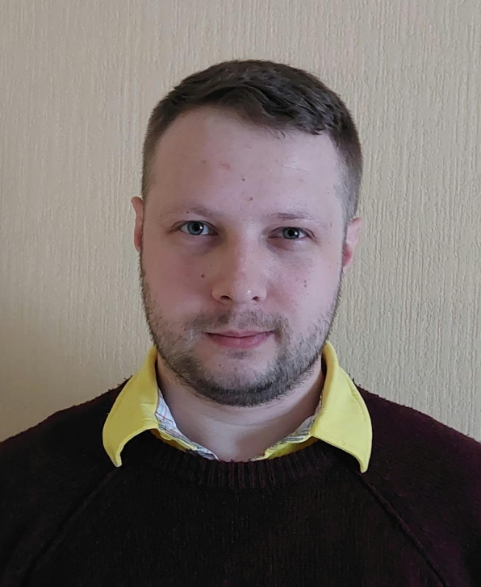

Ivo Saidans

Summary
I have a strong manufacturing process background where I was
responsible for Automated Optical Inspection process in which I was
part of Lean initiative to improve the overall workflow.
I am curious by nature and passionate about what I do. Having a life long interest
in IT and computers in general, I am looking to learn new things and
challenge myself in a new field of work.
Education
- Valgamaa Vocational School - Chef's assistant(2008-2010)
- Valga Primary School - Basic Education(1998-2008)
Work Experience
AOI Process Specialist - GPV Estonia AS
09.2018-12.2023
- Creation and maintenance of Automated Optical Inspection (AOI) programs
- Inspection data analysis (DPMO, FPMO, FPY)
- Making improvements to AOI programs/process based on gathered data and operator/product engineer/client feedback
SMA Technician - GPV Estonia AS
02.2018-09.2018
- On-site SMA (Surface Mount Assembly) department support
- SMA machine maintenance and repairs if needed
- SMA machine setup for production
SMA Operator - GPV Estonia AS
05.2013-02.2018
- Quality control of manufactured products
- Material preparation for production
- Operating SMA machines
Machinist/Warehouse worker - Otolux AS
04.2012-05.2013
- Setup and operation of various metalwork machines
- Manufactured part quality control
- Assembling and packaging of various metal parts and containers
Skills
Technical skills
- Git
- HTML
- MS Office suite
- Googling
Soft skills
- Analytical and logical thinking
- Time management
- Accuracy
- Attention to detail
- Focus on problem solving
Certifications
Languages
- Estonian - Native
- English - C2
- Russian - C1
- Latvian - C1
Other